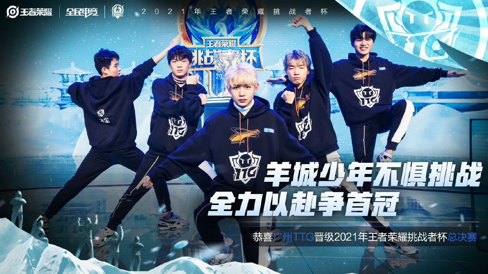

赛事回顾
2022年1月15日，2021王者荣耀挑战者杯总决赛，广州TTG一路过关斩将，从小组赛到淘汰赛，凭借精准的战术部署和队员们的默契配合，接连战胜强敌，成功闯入决赛。 决赛舞台上，面对实力强劲的对手，战队展现出顽强的拼搏精神，虽最终憾负获得亚军，但每一场比赛都给观众留下了深刻印象，用实力诠释了电竞精神。
关键数据
- 总比分: 广州TTG VS 武汉eStarPro 1:4
- 首发阵容：
对抗路：清清（吴金翔）
打野：不然（叶康）
中路：九尾（许鑫蓁）
发育路：钎城（周诣涛）
辅助：冰尘（李小龙） - FMVP：武汉StarPro坦然
舆论反馈
作为2021年第三次闯入总决赛的队伍，TTG承载着粉丝的殷切期待。尽管外界多数解说、主播更看好eStar，仅少数人坚信TTG能逆袭，但粉丝仍选择再信战队一次，盼他们打破秋季赛失利的魔咒，捧起冰凤凰杯 。 再度不敌eStar的结果，让粉丝陷入复杂情绪。大部分人称他们“一年三亚”，有人嘲讽他们无法夺得冠军，但粉丝仍相信他们，2021年的TTG血是热的，哪怕满是遗憾，也愿意等他们突破极限，“钎九不清冰”不会止步于此，将会拿下更多荣誉。
← 返回荣誉合集